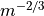
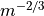

Fluence_model¶
- fluence_model … end_fluence_model¶
fluence_model <fluence-model-type-name> aperture_diameter ... atmospheric_structure ... beam_quality ... calculate_incidence ... jitter ... laser_type ... power ... wavelength ... ... derived model type commands end_fluence_model
Overview¶
The fluence model is utilized by WSF_LASER_WEAPON and WSF_CUED_LASER_WEAPON to calculate beam spread and beam loss due to jitter, diffraction, atmospheric turbulence, extinction, and target effects.
Note
The default method of calculating target geometry is to assume a head-on, maximally effective aspect. This may be modified with a cosine rolloff with the use of the calculate_incidence input. However, the best way to model the target geometry is with a WSF_INTERSECT_PROCESSOR and the use of intersection meshes that represent the target geometry within the simulation.
<fluence-model-type-name> Specifies one of the Fluence Model Types:
Commands¶
- aperture_diameter <length-value>¶
The aperture diameter of the HEL system. Changing this parameter controls the diffraction-induced beam spread, affecting the beam size on target. The larger the aperture diameter, the smaller the beam on target, and the greater the energy density (energy density ~ (aperture diameter^2)).
- atmospheric_structure <hv57>¶
Specify the atmospheric structure model, or
 function, used to compute atmospheric turbulence. It has units of .
function, used to compute atmospheric turbulence. It has units of .Default “hv57”
Note
Currently, only the HV 5/7 model (“hv57”) is available. More choices should be available in the future.
- beam_quality <real-value>¶
Specify the beam quality of the optical system. The beam quality is a measure of how close the profile is to a perfect gaussian. Specifically it is a multiplicative factor times the diffraction-limited radius. It varies from a value of 1 (diffraction limited) to values of order unity (but still greater than one).
Default 1.1
- calculate_incidence <boolean-value>¶
Specify whether to calculate an incidence angle on target based on aspect, with a head-on aspect to target representing the minimum (0 degree) incidence. Any incidence greater than 90 degrees would be considered ineffective.
Default disabled
Note
This feature has been superseded by use of intersection meshes and the WSF_INTERSECT_PROCESSOR.
- jitter <angle-value>¶
Specify the jitter of the system (typically on the order of microradians). The higher the jitter, the more a HEL beam will be “spread out” over the target.
Default 6.6e-7
- laser_type carbon_dioxide | nd_yag | coil | deuterium_fluoride¶
Specify the high-energy laser type. In turn this specifies the wavelength, which is needed by the various models to calculate diffraction and extinction of the beam.
Note
Currently use of this command is preferred over wavelength.
Note
This value, along with haze_model and atmosphere_model is used to load a table of atmospheric_coefficients generated by ModTran.
- power <power-value>¶
This is the actual laser power emitted from the aperture.
- wavelength <length-value>¶
The wavelength at which the laser operates (e.g., 1.064 microns for a Nd-YAG laser). Current supported wavelengths (in nanometers) include
1000 (Carbon Dioxide)
1064 (Nd:YAG)
1315 (COIL- Iodine Lasing)
3800 (Deuterium Fluoride)
Note
This value, along with haze_model and atmosphere_model is used to load a table of atmospheric_coefficients generated by ModTran.
Note
See the “hel_demo” example directory in the standard release for the necessary files corresponding with these atmosphere models.